20062020
Hide & Seek (Latent Surveillance Map)
Counter-mapping, Research, Award / GrantForecast PlatformEvgeny Morozov- About
- Project on how mapping technologies, digital image production and data collection shape urban surveillance, developed as a selected nominee of Forecast in the strand Dissecting Technocapitalism with mentor Evgeny Morozov and the starting point of the Urban Surveillance Bureau.
- Place
- Radialsystem, Berlin
- Links
- Original ↗
Forecast ↗
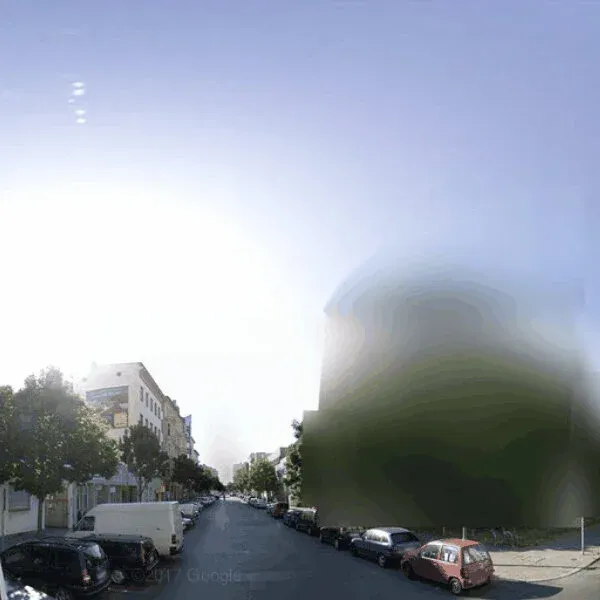
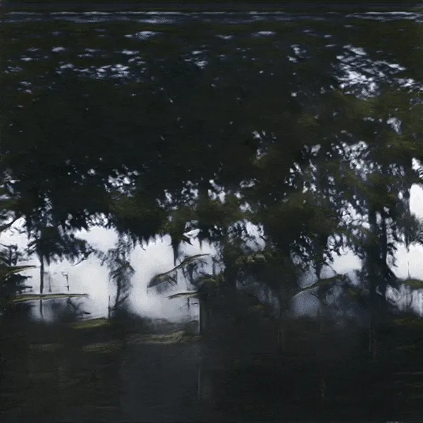
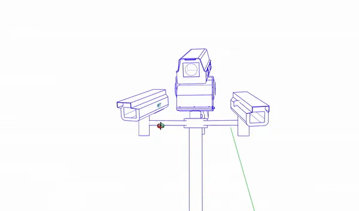
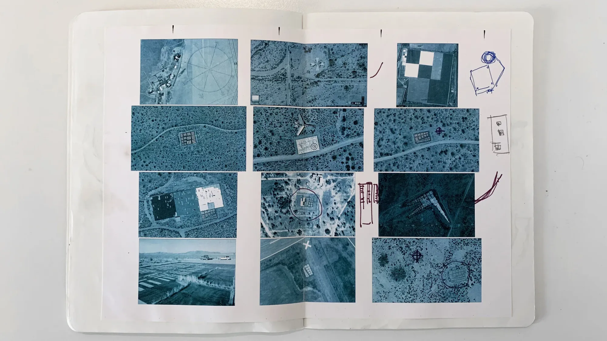
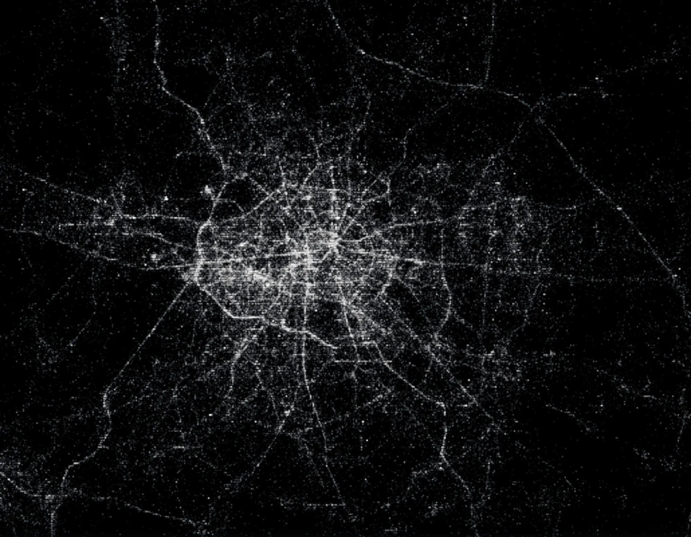
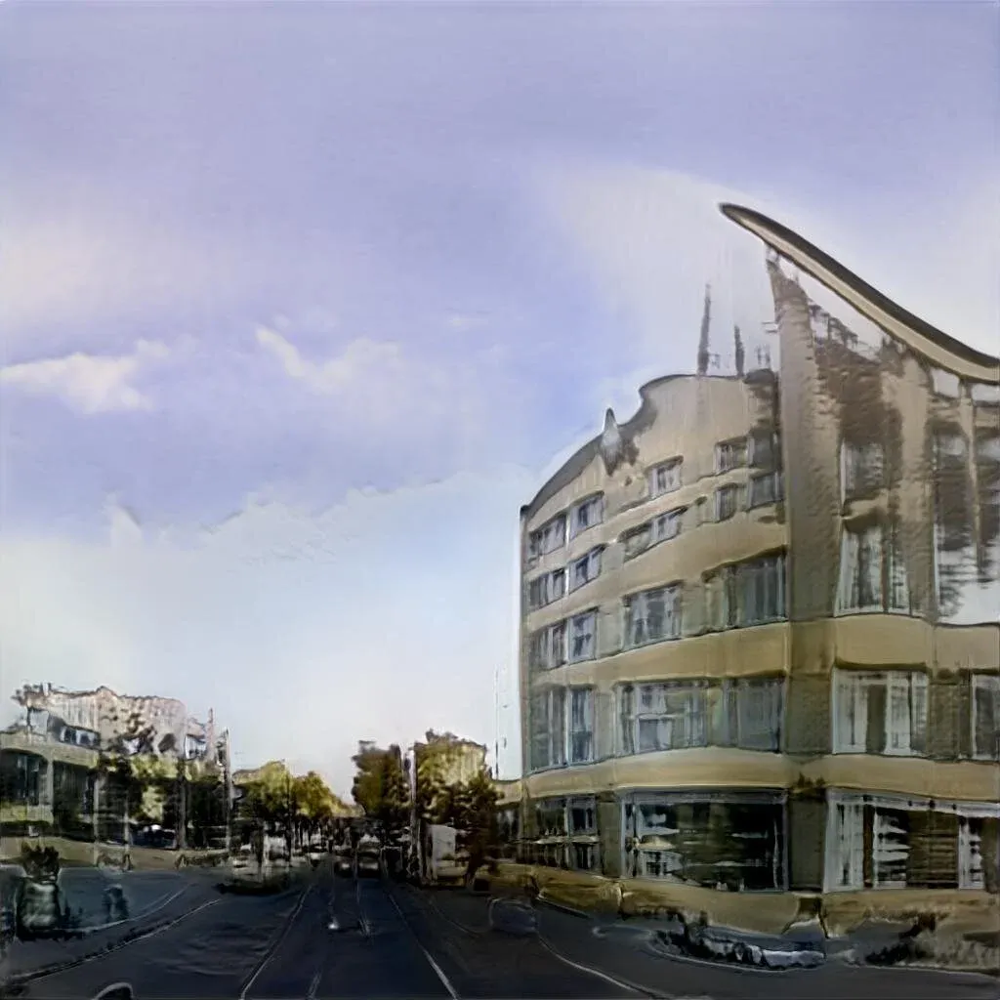
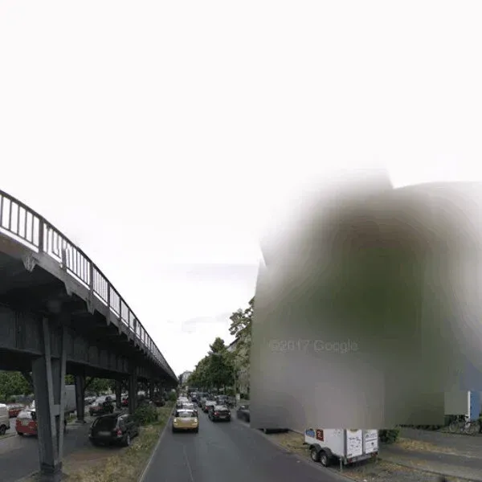
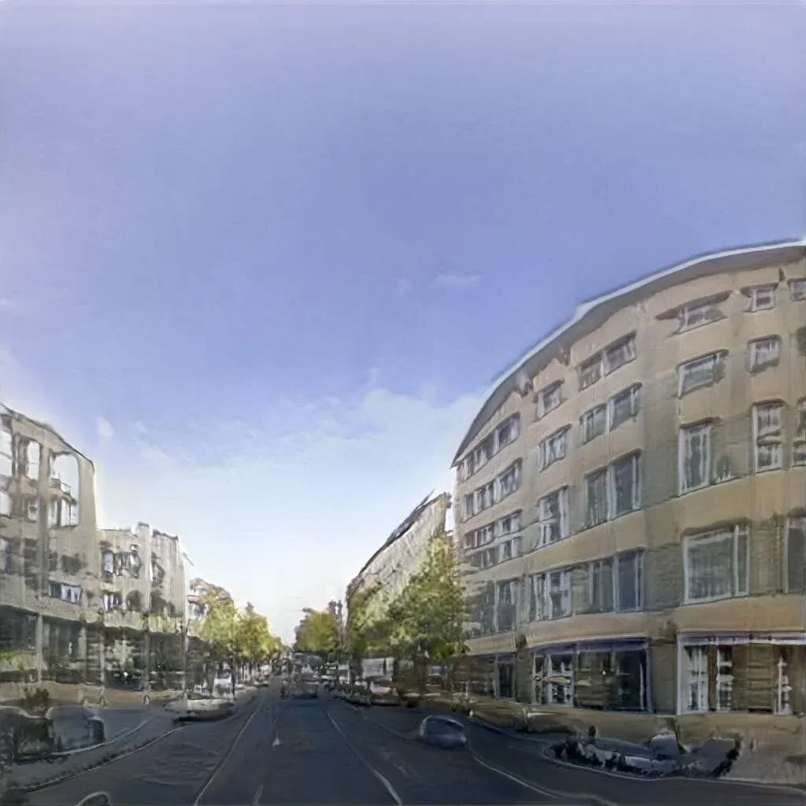
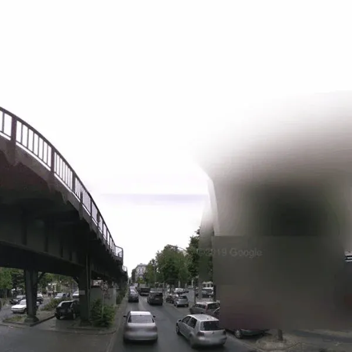
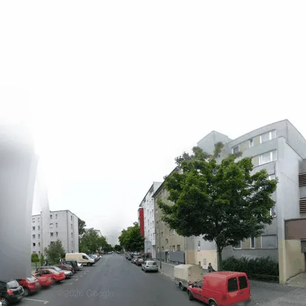
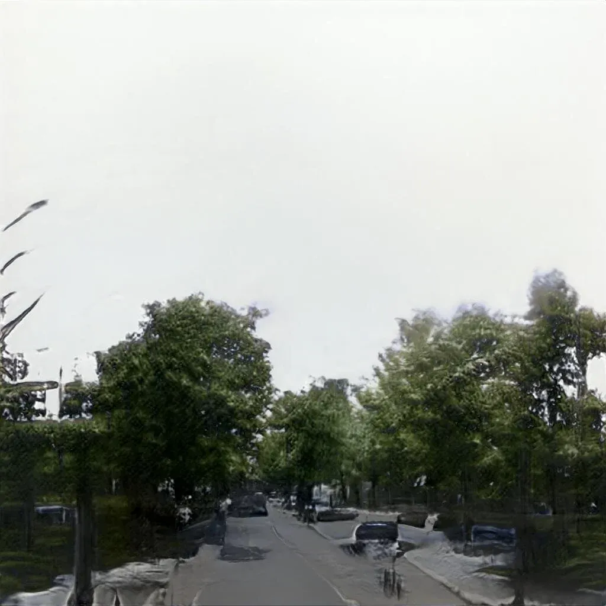
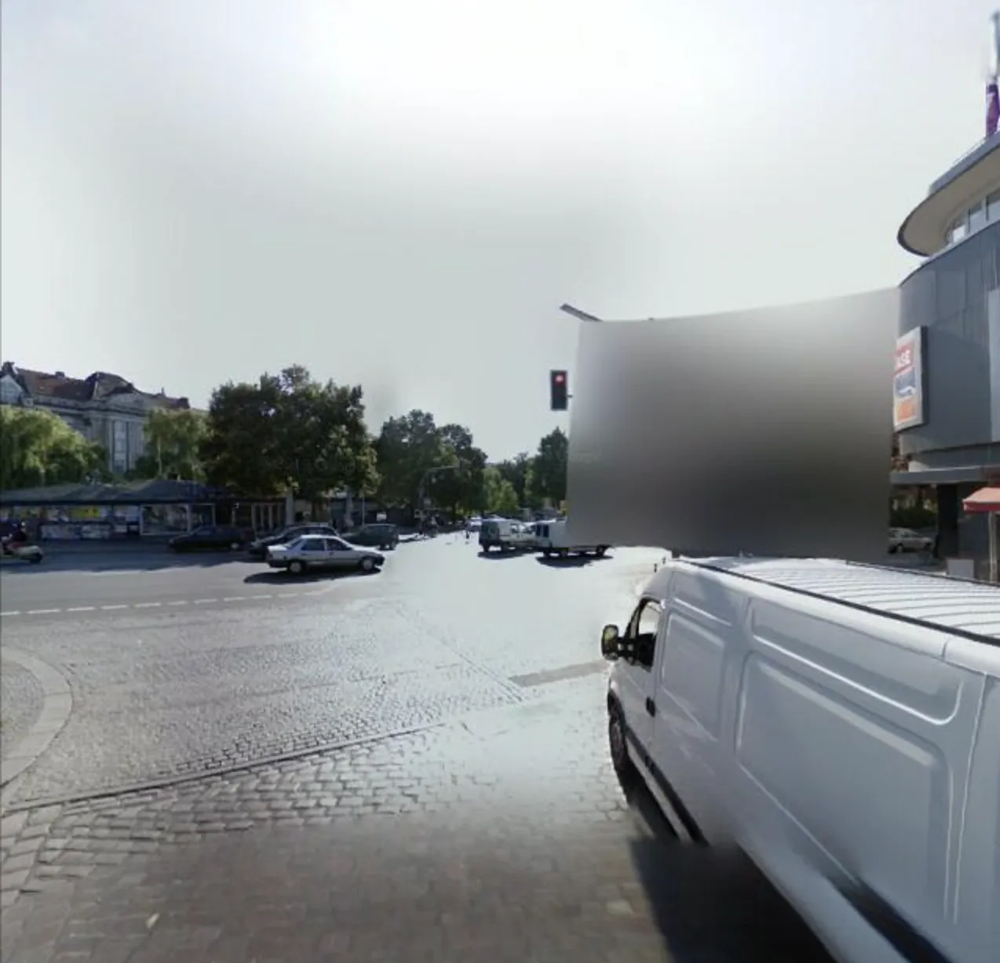
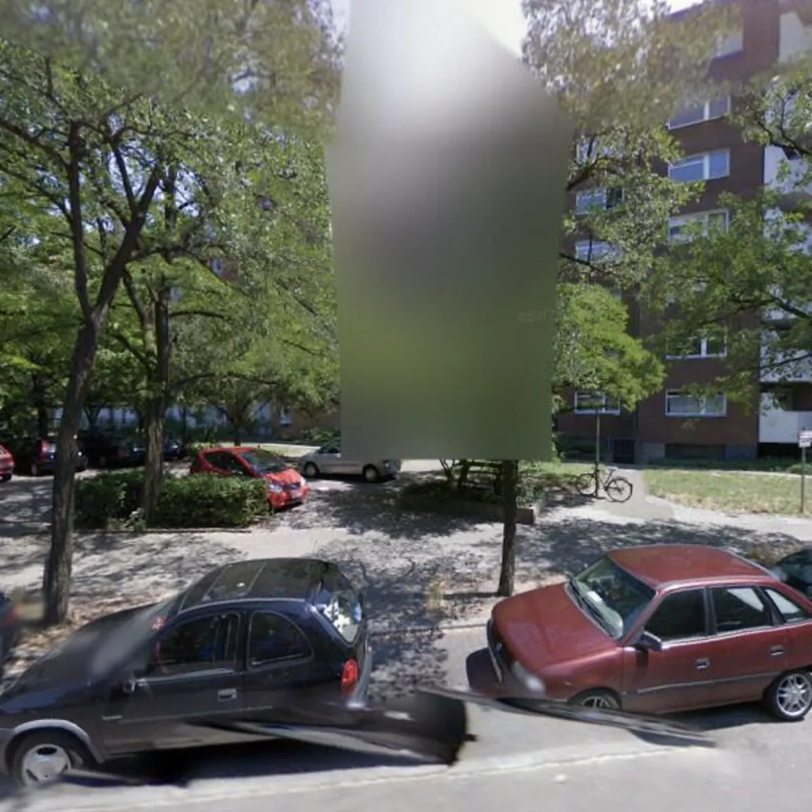
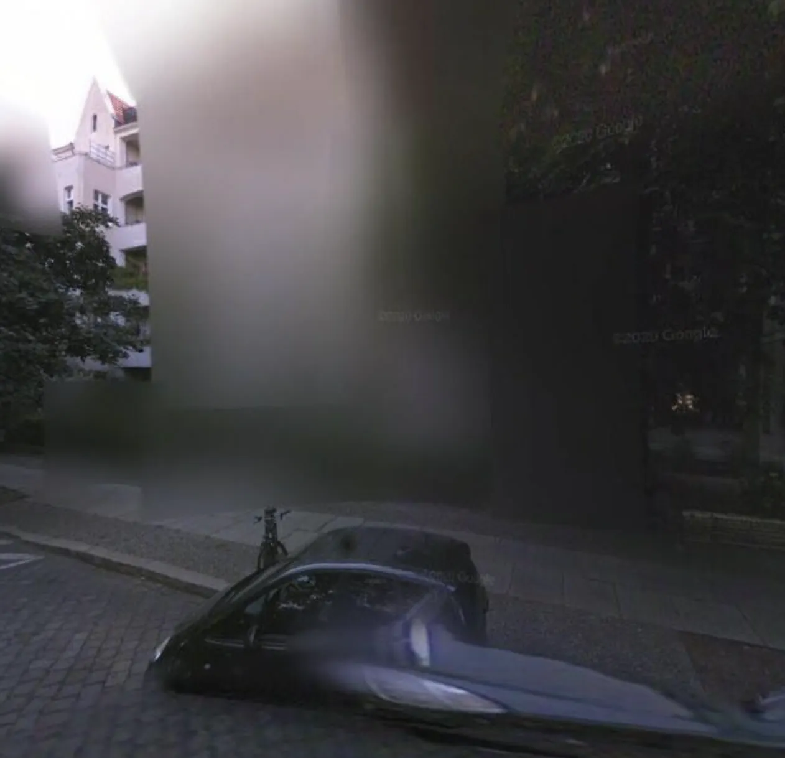
Press
- 16.10.2020A Project by Yelta Köm ↗Forecast
- Hide & Seek (tag page: Yelta Köm) ↗Forecast